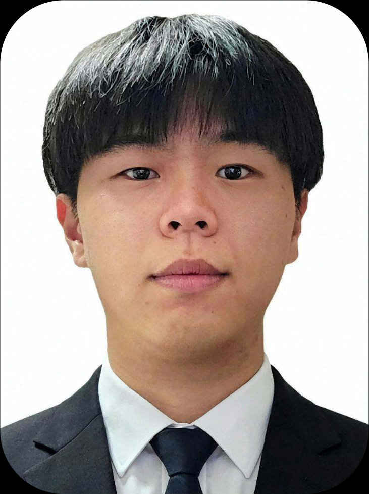

SCROLL ↓
영상·3D·게임·XR 콘텐츠를 직접 기획하고 제작하며, 아이디어가 실제 결과물로 완성되는 전 과정을 경험했습니다. Unity, Unreal Engine, Figma 등 다양한 제작 도구를 활용한 경험을 바탕으로 기획·디자인·개발 직군의 업무를 이해하고, 요구사항과 피드백을 구체적인 제작 항목으로 정리할 수 있습니다.
게임 개발 경험을 미디어아트에 접목해 관객의 반응에 따라 변화하는 인터랙티브 콘텐츠를 기획·제작·전시했습니다.